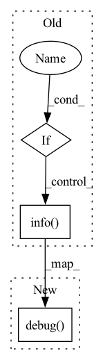

Pattern ID :29776

Before Change
if self.verbose:
logging.info("Epoch: {0:d}, finished reading dataloader. ".format(self.cur_epoch))
else:
if self.verbose:
logging.info("Epoch: {0:d}, reading dataloader... ".format(self.cur_epoch))
if ((self.cur_epoch - 1) % self.select_every == 0) and (self.cur_epoch > 1):
self.resample()
loader = self.subset_loader
if self.verbose:
After Change
loader = self.wtdataloader
self.logger.debug("Epoch: {0:d}, finished reading dataloader. ".format(self.cur_epoch))
else:
self.logger.debug("Epoch: {0:d}, reading dataloader... ".format(self.cur_epoch))
if ((self.cur_epoch - 1) % self.select_every == 0) and (self.cur_epoch > 1):
self.resample()
loader = self.subset_loader
self.logger.debug("Epoch: {0:d}, finished reading dataloader. ".format(self.cur_epoch))
In pattern: SUPERPATTERN
Frequency: 3
Non-data size: 3
Instances
Fragment ID: 88141248
Project Name: decile-team/cords
Commit Name: f88f775f12ba2f608ac1379c341aff2ed5f3115a
Time: 2021-10-15
Author: krishnateja.killamsetty@utdallas.edu
File Name: cords/utils/data/dataloader/SL/adaptive/adaptivedataloader.py
M Class Name: AdaptiveDSSDataLoader
N Class Name: AdaptiveDSSDataLoader
M Method Name: __iter__(1)
N Method Name: __iter__(1)
M Parent Class: DSSDataLoader
N Parent Class: DSSDataLoader
M File Name: cords/utils/data/dataloader/SL/adaptive/adaptivedataloader.py
N File Name: cords/utils/data/dataloader/SL/adaptive/adaptivedataloader.py
M Start Line: 37
M End Line: 56
N Start Line: 37
N End Line: 50
'>
Before Change
if self.verbose:
logging.info("Iteration: {0:d}, finished reading full dataloader. ".format(self.cur_iter))
else:
if self.verbose:
logging.info("Iteration: {0:d}, reading dataloader... ".format(self.cur_iter))
if self.cur_iter > 1:
self.resample()
self.curr_loader = self.subset_loader
if self.verbose:
After Change
self.curr_loader = self.wtdataloader
self.logger.debug("Iteration: {0:d}, finished reading full dataloader. ".format(self.cur_iter))
else:
self.logger.debug("Iteration: {0:d}, reading dataloader... ".format(self.cur_iter))
if self.cur_iter > 1:
self.resample()
self.curr_loader = self.subset_loader
self.logger.debug("Iteration: {0:d}, finished reading dataloader. ".format(self.cur_iter))
'>
Fragment ID: 88141249
Project Name: decile-team/cords
Commit Name: edaf22479b4e920d8dda788f6e628891597b572b
Time: 2021-10-12
Author: krishnateja.killamsetty@utdallas.edu
File Name: cords/utils/data/dataloader/SSL/adaptive/adaptivedataloader.py
M Class Name: AdaptiveDSSDataLoader
N Class Name: AdaptiveDSSDataLoader
M Method Name: __iter__(1)
N Method Name: __iter__(1)
M Parent Class: DSSDataLoader
N Parent Class: DSSDataLoader
M File Name: cords/utils/data/dataloader/SSL/adaptive/adaptivedataloader.py
N File Name: cords/utils/data/dataloader/SSL/adaptive/adaptivedataloader.py
M Start Line: 60
M End Line: 73
N Start Line: 65
N End Line: 73
'>
Before Change
pos.append(self.walkers.pos.to("cpu").clone())
idecor += 1
if self.with_tqdm:
log.options(style="percent").info(" Acceptance rate %1.3f" %
(rate / self.nstep * 100))
return torch.cat(pos).requires_grad_()
def configure_move(self, move):
After Change
pos.append(self.walkers.pos.to("cpu").clone())
idecor += 1
log.options(style="percent").debug(" Acceptance rate %1.3f" %
(rate / self.nstep * 100))
return torch.cat(pos).requires_grad_()
def configure_move(self, move):
'>
Fragment ID: 88141250
Project Name: nlesc-jcer/qmctorch
Commit Name: 60e768b52e4631096cf4dff91b1926931e73277f
Time: 2020-05-26
Author: nicolas.gm.renaud@gmail.com
File Name: qmctorch/sampler/metropolis.py
M Class Name: Metropolis
N Class Name: Metropolis
M Method Name: __call__(4)
N Method Name: __call__(3)
M Parent Class: SamplerBase
N Parent Class: SamplerBase
M File Name: qmctorch/sampler/metropolis.py
N File Name: qmctorch/sampler/metropolis.py
M Start Line: 64
M End Line: 124
N Start Line: 60
N End Line: 128